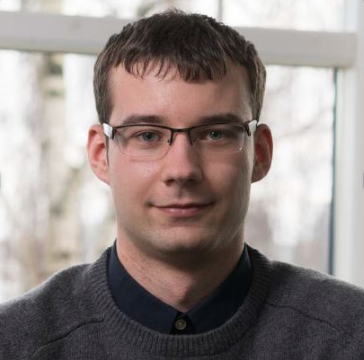

Artur Robalko

Summary
Dedicated and detail-oriented Mechanical engineer
with strong interest in product development and
optimization. With extensive knowledge in FEM/CFD
simulations, prototyping and testing, I have a proven
track record of developing successful products. My
passion for innovation and problem-solving, combined
with my strong analytical skills, enable me to develop
solutions that meet customer needs and market
demands.
Education
- Bachelor's Degree, Mechanical Engineering (Sustainable energy specialization) - VIA University college (2013-2017)
- Master's Degree, Mechanical Engineering (Fluid and thermodynamics specialization) - Aarhus University (2017-2019)
Professional Experience
FLONIDAN A/S | Mechanical engineer at R&D department
2019-2023
Key responsibilities
- Led the design and optimization of plastic and metal
components of smart gas meters
- Being in contact with toolmaker
- Mold flow simulations of plastic parts
- Rapid prototyping
- IP, Dust & Particle testing and documentation
- Product requirements documentation, test reports
- FEM, CFD and Multiphysics simulations of flow systems of
complete Ultrasound gas meter and its separate components
FLONIDAN A/S | Mechanical engineering intern with continuation as student worker
2015-2019
Key responsibilities
- Creating / updating drawings and parts for new/existing gas
meter components.
- Performed different testing such as noise test and dust and
particles test of the gas meters.
- Designing / creating of new test equipment for life-time tests
Achievements
- Robust rubber sealing design of plastic index to meet IP54 and
IP67 requirements
- Successful plastic filter box design to pass Dust & particles test
for the domestic gas meters
- Development of a valve prototype for the gas meter
- Development of 3D models of the gas meters usable for different
simulation purposes
- Performing acoustics simulation that are used for future
optimization and development of the gas meters
Hard skills
- Expertise in using simulation and modeling
software such as COMSOL, ANSYS,
OpenFOAM
- Proficiency in 3D modeling and design
software such as SolidWorks, Inventor
- Experienced in technical drawings,
tolerance chain calculations and GD&T
system
- Knowledge of DFM principles and DFMEA
practices
- Experience in rapid prototyping and
testing of plastic product designs
- Strong knowledge within CFD and FEA field
- Python scripting
Soft skills
- Effective communication
- Excellent problem-solving
- Strong time management
- Creative thinking
- Strong attention to details
Languages
- Danish - Limited working proficiency
- English - Professional working proficiency
- Estonian - Limited working proficiency
- Russian - Native
References
(Available upon request)
Tonny Frederiksen
CTO, FLONIDAN A/S
Phone: +*********
Email: ***@flonidan.dk
Erik Hegelund
Senior Mechanical engineer, FLONIDAN A/S
Phone: +*********
Email: ***@flonidan.dk
Other